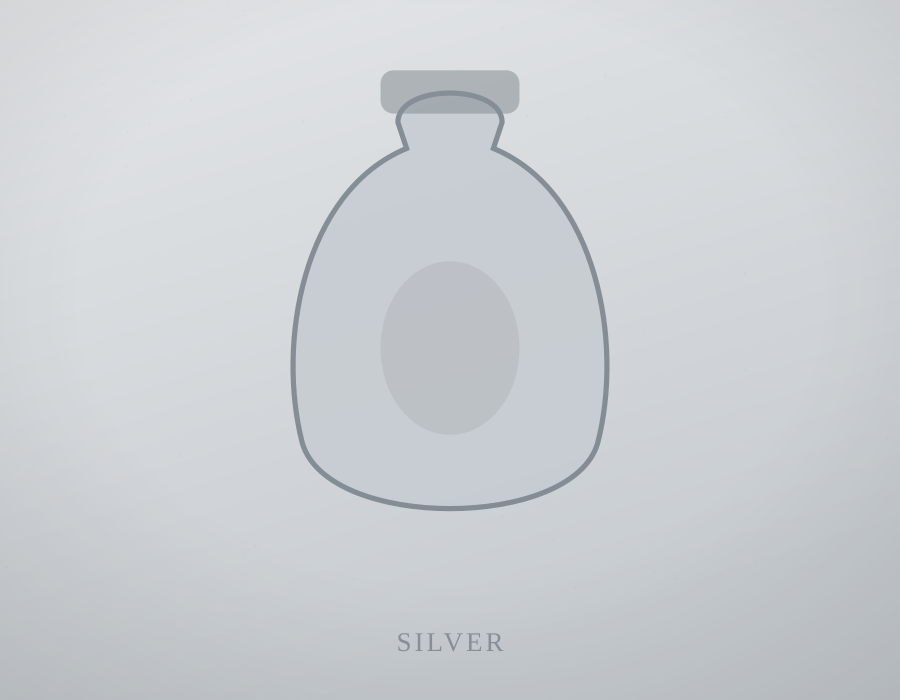
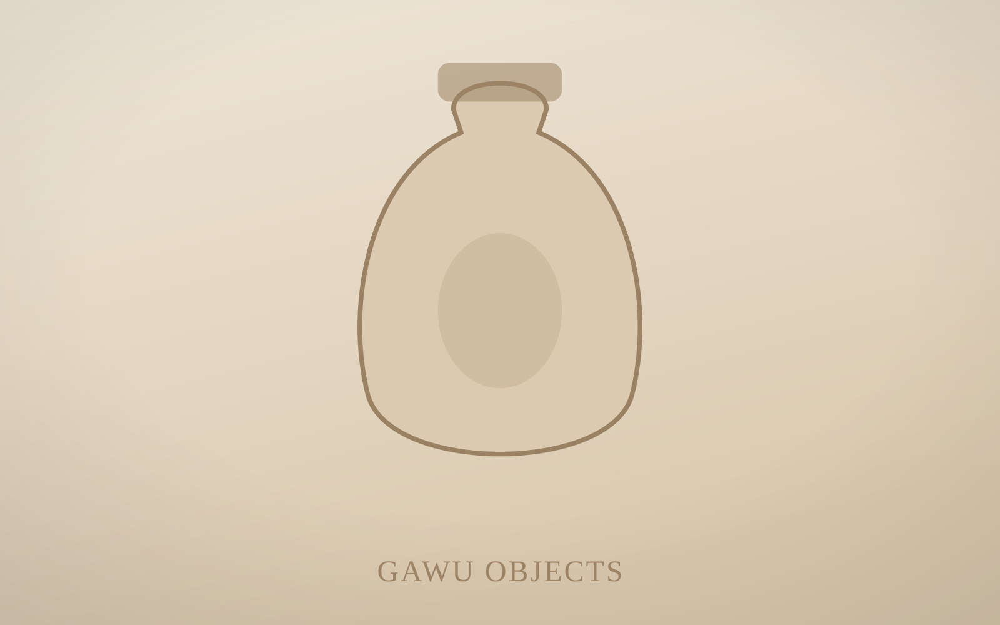
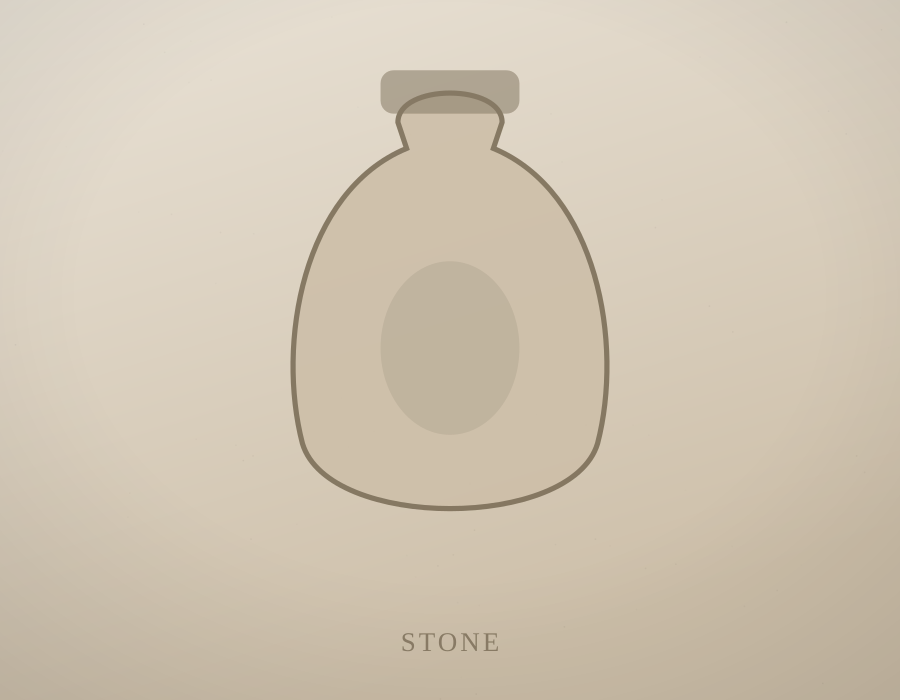
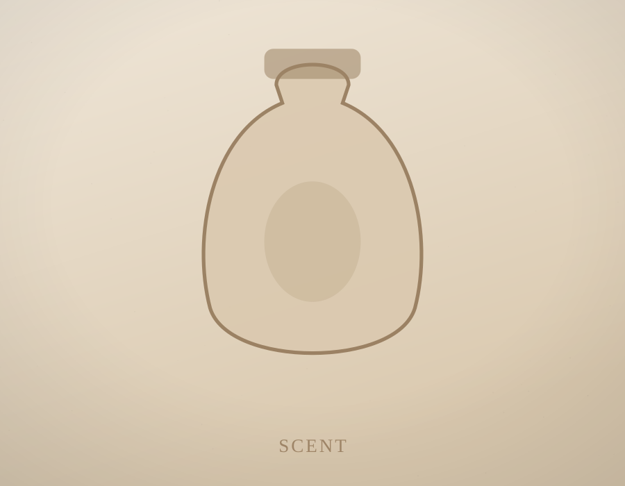

Silver: quiet protection
Recycled 925 silver, chosen for its old association with warding and clarity. It warms to the body and keeps the form that holds your meaning.
Symbolic adornments inspired by ancient vessels, sacred landscapes, emotional rituals and the body's memory.


Some feelings have no language. They live in the body — in the chest, the throat, the pulse at the wrist. GAWU makes objects to hold them: small silver vessels, sealed capsules and scent-keeping charms designed to be worn close, where breath gathers.
Each piece is shaped around an old human instinct — to keep what protects us within reach of the skin. A drop of scent for grounding. A folded word for courage. A fragment of a place that changed you. The object becomes a quiet companion to the ritual of being a person.
Made slowly, in small batches, from recycled silver and natural stone — adornment with weight, and meaning you assign yourself.
Read our story
Recycled 925 silver, chosen for its old association with warding and clarity. It warms to the body and keeps the form that holds your meaning.

Lapis, agate, smoky quartz and river stone — natural materials that carry deep time, set raw or polished to hold the memory of where they formed.

Porous lava and sealed vessels hold a single grounding scent close to the pulse — the fastest, quietest route the body knows back to calm.